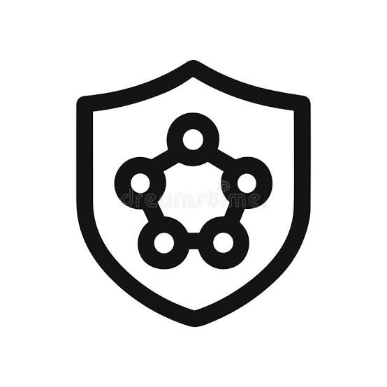

Welcome to NINE WORLD SHIELD! We are dedicated to protecting the digital world by providing strong, reliable, and innovative cybersecurity solutions.
I am currently a junior at the College of Staten Island majoring in Computer Science, where I am building a strong foundation in programming, systems, and technology. My ultimate goal is to become a Cybersecurity Analyst, a career that excites me because it combines my love for problem-solving with the responsibility of protecting valuable information. Over the course of my studies, I have learned C++, which has strengthened my understanding of programming logic and problem-solving. In addition, I am actively learning HTML, which helps me understand how websites are structured, and SQL, which gives me insight into how databases store and manage data. By gaining skills in C++, web development, and database management, I am preparing myself for the challenges of cybersecurity and the opportunities it brings. Each step I take in my studies brings me closer to achieving my dream of contributing to a safer and more secure digital world.
Date: 9/15/2025 || Author: Akeem Akinniyi